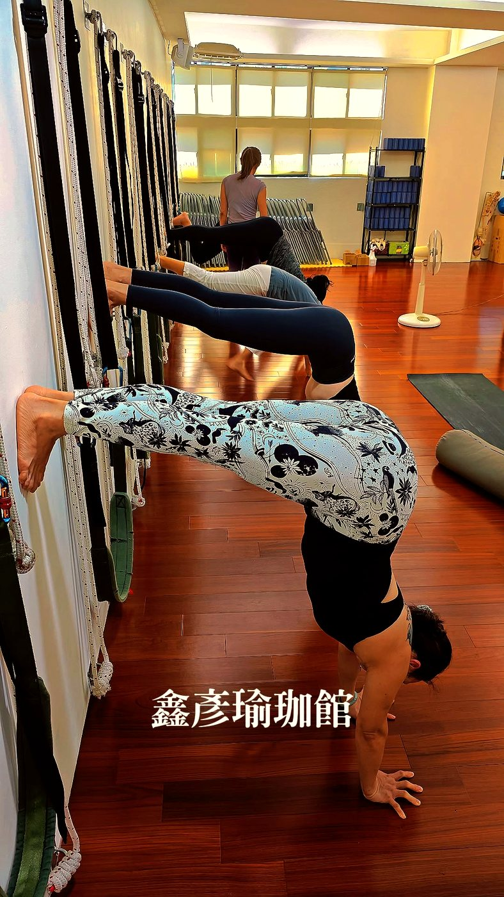

頭痛、眼睛脹，有時候是脖子的問題

- 下午開始後腦悶脹、單側太陽穴抽緊、眼眶深處發酸，臨床上常是「頸因性頭痛（Cervicogenic Headache）」，源頭往往在後頸上段。
- 頭部前傾使「枕下肌群」持續痙攣，夾擠枕大神經；痛覺訊號透過「三叉神經頸髓束」交叉反射至眼窩，讓大腦誤以為是眼睛疲勞。
- 盲目吃止痛藥或死命敲打後頸只能暫時麻痺；把往前掉的頭「請回脊椎軸線」，喚醒深層頸屈肌，才能真正解除後頸高壓。
- 壁繩瑜伽提供骨盆與胸廓懸掛，安全打開頸胸交界；突發劇烈雷擊型頭痛或伴隨手腳無力，必須立即掛急診就醫。
每到下午三、四點，後腦勺就開始一陣一陣發悶發緊，太陽穴像被一條鐵絲牢牢箍住，連帶著眼眶深處也跟著酸脹發熱。你揉了揉眼睛、滴了眼藥水，甚至吞了顆止痛藥，心想「大概是盯螢幕看太久、眼睛過勞吧」。但很多時候，這股頑固的脹痛源頭既不在眼睛、也不在大腦內部，而是來自後腦勺下方那一小群早已緊繃如石的「枕下肌群」。
醫學名詞拆解：什麼是「頸因性頭痛」？
在國際頭痛學會（IHS）的分類中，這種痛感在頭部、但根源在上頸段脊椎與肌肉的現象，被正式命名為「頸因性頭痛（Cervicogenic Headache, CGH）」。
不同於血管擴張引發的脈搏跳動性偏頭痛，頸因性頭痛具備非常鮮明的臨床特徵：
- 痛感路徑清晰：通常從後枕部（後腦勺底端）、上頸椎開始悶脹，隨後像戴帽子一樣，向前上方牽引蔓延至單側頭頂、太陽穴，甚至深入到眼球後方。
- 姿勢加劇：轉動脖子、低頭滑手機或維持同一姿勢打電腦半小時以上，脹痛感會顯著放大；按壓後腦骨頭下緣的凹陷處，會摸到明顯的酸脹硬塊。
- 非跳動性悶脹：患者常形容「像有一隻無形的大手緊緊掐住後頸，連帶著眼球快要被擠爆出來」。
神經解剖學揭秘：後頸緊繃，為什麼會讓「眼睛發脹」？
很多人百思不得其解：「脖子在後面，眼睛在前面，後面的肌肉緊，為什麼會牽連到前面的眼睛？」
答案就在於人體神經系統精密的「三叉神經頸髓束（Trigeminocervical Complex, TCC）」聚合機制：
- 枕下肌群（Suboccipital Muscles）痙攣：當我們頭部習慣往前伸，位於後腦勺正下方的四對精密小肌肉（頭後大直肌、頭後小直肌、頭上斜肌、頭下斜肌）必須全天候緊縮以防頭往前掉。
- 夾擠枕大神經（Greater Occipital Nerve）：這四對小肌肉的縫隙中，正穿行著粗大的「枕大神經（源自頸椎 C2 神經根）」。長期的肌肉僵硬痙攣，會如同一把鉗子死死夾擠這條神經。
- 神經訊號的交叉錯覺：枕大神經的感覺纖維傳回中樞時，會在高位頸髓與主管我們臉部、眼眶周圍感覺的「三叉神經（Trigeminal Nerve）第一分支眼神經 V1」共用同一個神經元突觸。
當後頸持續傳來強烈的疼痛訊號時，大腦的中樞感覺皮層發生了「訊號判讀混淆（Referred Pain）」——大腦無法精準分辨刺激究竟來自後頸還是前額，於是把痛覺投射在三叉神經主管的「眼眶後方與眉心」，讓人產生「眼睛脹痛、視力模糊」的錯覺！
把頭「請回軸線」，後頸才有可能真正鬆綁
許多人在頭痛時，習慣用拳頭死命捶打後腦、或者去給人暴力硬扳脖子喀喀作響。這是非常危險的行為！枕下三角區域有脆弱的椎動脈與密集的交感神經節，暴力衝擊極易誘發肌肉保護性痙攣加劇，甚至有動脈內膜損傷的風險。
治本的方向只有一個：「改善頭頸力線，卸除後頸的長期負擔」。
- 鬆開後頸代償：透過溫和深層的筋膜滑動，釋放過勞的枕下肌群、上斜方肌與提肩胛肌。
- 喚醒深層頸屈肌（Deep Neck Flexors）：包含深埋在頸椎前方的頸長肌（Longus Colli）與頭長肌（Longus Capitis）。這兩條肌肉如同頸椎前側的彈性吊橋，一旦它們無力，後頸就必須扛下 100% 的重力。
壁繩瑜伽能提供什麼特別的幫助？
在地面練習時，肩頸緊繃的人常因核心無力而下意識聳肩硬撐。壁繩瑜伽具備獨特的輔助優勢：
- 特製胸廓懸掛打開胸腔：藉由壁繩的牽引拉力，在無聳肩代償的狀態下，把長期向前緊縮的胸廓、肋骨與鎖骨向外安全展開，打破「圓肩駝背 $ o$ 頭前傾」的惡性連鎖。
- 頸胸交界被動減壓：利用懸掛繩帶分擔自重，讓頸椎第七節至胸椎第一節（C7-T1）的轉折應力被溫和拉開，給予神經根充足的血流供應。
- 促進副交感神經活化：配合深長舒緩的橫膈膜腹式呼吸，降低中樞神經敏感度，平撫緊繃的神經系統。
醫療急症紅旗！這些頭痛症狀請立即掛急診
雖然多數辦公室族群的頭痛與體態有關，但頭部症狀涉及腦血管與中樞神經，出現以下「SNOOP」紅旗警訊時，請務必立刻前往大醫院急診，切勿拖延：
- 雷擊型頭痛（Thunderclap Headache）：幾秒鐘內痛感達到頂峰、如同被大鐵鎚重擊的劇烈頭痛（需緊急排除蜘蛛膜下腔出血）。
- 腦膜刺激警訊：劇烈頭痛伴隨高燒、頸部僵硬到完全無法將下巴貼向胸口。
- 神經學缺損徵兆（中風 FAST）：伴隨單側手腳無力、步態不穩、說話口齒不清、視力缺損複視或嘴角下垂。
- 新發生頭痛：50 歲以上初次發作的新型頭痛，或有癌症病史者出現的漸進性劇痛。
了解您的頭部前傾與耳肩力線
頭痛眼脹往往源於頸椎幾何力線的偏移。透過客觀的 2D AI 體態檢測，讓老師當面為您量化耳垂與肩峰的相對位置，梳理目前的肌肉張力分佈，規劃最安全、零負擔的肩頸舒展方針。
預約首次 NT$299 AI 體態檢測（含老師當面解讀）居家微調：辦公桌上的「微收下巴（Chin Tuck）」練習
在辦公桌前感到後腦微脹時，可以隨時進行這個溫和的小練習：
- 坐正，背部保持中立，肩膀放鬆自然下沉，雙眼平視前方。
- 食指輕輕抵在下巴前方，水平向後輕推下巴（如同做出一個小小的雙下巴，注意不要低下頭看地板）。
- 感覺後腦勺朝斜上方天花板延伸、後頸有一股溫和的被拉開感，喉嚨前方深層肌肉有微幅的向內收緊感。
- 停留 5 秒，配合深沉緩慢的呼吸，重複 5 次。每坐 40 分鐘做一輪，給予枕下肌群喘息空間。
本文為頸椎解剖與神經力學衛教知識分享，並非醫療行為，亦不提供任何醫療診斷或治療承諾。若有劇烈頭痛、噁心嘔吐、手腳無力或疼痛持續惡化，請務必諮詢神經內科、骨科或復健科專科醫師。
常見問題
什麼是「頸因性頭痛」？它跟一般偏頭痛有什麼不同？
頸因性頭痛（Cervicogenic Headache）是由頸椎上段關節或枕下肌群緊繃引發的牽涉痛。典型特徵是由後枕部向上向前蔓延至單側太陽穴或眼窩深處，通常在低頭轉頸、長時間盯螢幕後加劇，伴隨後頸壓痛；而典型血管性偏頭痛常伴隨搏動性跳痛、畏光畏聲或預兆閃光。
為什麼明明是後頸緊繃，痛感卻會跑到眼睛深處？
在神經解剖學上，上頸段神經（C1至C3）與主管面部及眼周感覺的「三叉神經」，在腦幹與頸髓交界的「三叉神經頸髓束（Trigeminocervical Complex, TCC）」高度聚合。當枕大神經受到枕下肌群夾擠時，痛覺訊號會在此產生交叉投射，使大腦產生錯覺，誤以為痛覺來自眼眶深處。
頭痛眼脹發作時，自己大力用力敲打後腦或大力揉捏安全嗎？
非常不建議。枕下三角區域分布著密集的枕大神經與椎動脈，大力敲打或盲目暴力指壓容易引發保護性肌肉痙攣反彈，甚至有微血管損傷或動脈夾層風險。建議改以平躺後腦墊毛巾卷、微幅收下巴的溫和方式放鬆。
壁繩瑜伽能代替藥物或治好慢性頭痛嗎？
不能。本館嚴格遵守合規標準，壁繩瑜伽是一項身體肌筋膜活動度調整的溫和練習，絕非醫療行為，亦不能承諾治癒頭痛或取代神經專科藥物。它的價值在於利用繩帶懸掛支持打開緊縮的胸廓與頸胸交界，幫助改善日間頭前傾的力學重力負擔。
出現哪些頭痛症狀時屬於醫療急症，必須立刻送急診？
若出現如被鐵鎚重擊的突發劇烈「雷擊型頭痛」、伴隨發燒與脖子僵硬無法觸碰下巴（腦膜炎警訊）、伴隨單側手腳無力、說話不清或嘴角歪斜（中風警訊）、或是跌倒頭部撞擊後發生的頭痛，請立刻就近送大醫院急診評估，絕不能只當作肩頸緊繃。